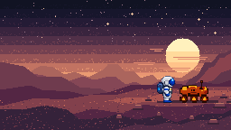

Surviving
in Mars
Learn by playing. Come to Mars and discover a new adventure!
Turn your phone sideways for a better gameplay experience.
SURVIVING IN MARS
Créditos
Sprites do astronauta: Space Runner Assets, Matt Walkden (CC0).
Mapa de treinamento inspirado na missão Opportunity.
Cenário e logo: imagens fornecidas pelo usuário.
Trilha do menu: Stellar Rift, fornecida pelo usuário.